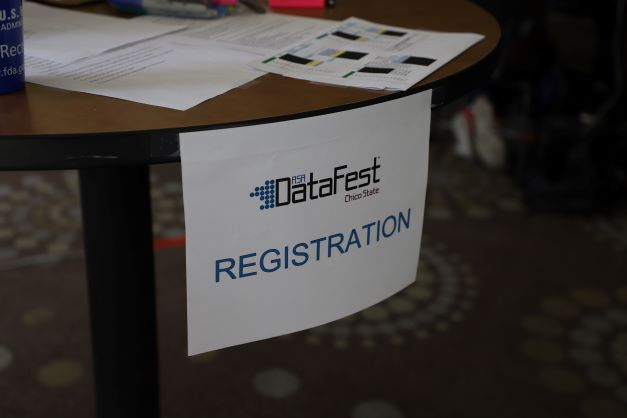
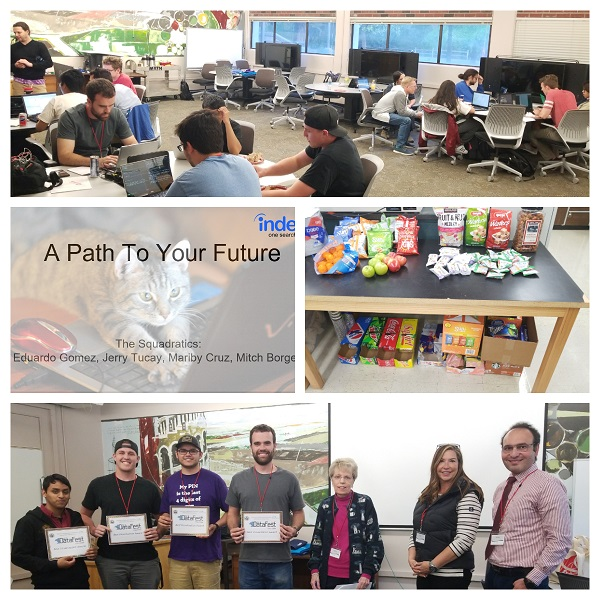

Participating in DataFest was a great way to expose myself to the practical use of data in the real world. Before this, I never really knew how much you could possibly do with data and the many different ways you can analyze it. I think anyone who is interested in data or research should particpate as it was a very rewarding and eye-opening experience!
A celebration of data!
April 10-12th, 2026
@ CSU Chico!
Registration open until February 9 2026
- Preference given to teams of 4-5
- Single sign ups welcome
- Teams will be formed in advance.

1 Large and complex secret data set
- Teams of 4-5 undergraduates
- 48 hours of wrangling and visualization
- 2 slides & 5 min presentation
- 3 chances for glory and prizes
- 1 unforgettable weekend

Internationally coordinated by the American Statistical Association
- Founded in 2011 and now involving
- 42000+ students
- 60+ schools
- 3 countries
Testimonials
Hear what prior participants had to say about this event.
-

Yazmin Chiquito
Statistics Student
-
NorCal DataFest was such a challenging and rewarding experience. I liken it to a cold-plunge; the shock filled my body as I entered the waters and I thought to myself “can I even do this,” but once I embraced the discomfort it somehow became more manageable. By the end of it I was filled with this strange sense of satisfaction that left me thinking “I kind of want to do it again.” I got to see what data science and analytics actually looks like all the while gaining resume worthy experience. If you are considering attending, do it!

Matt Ardon
Business and Analytics Student
-
DataFest was an awesome, eye-opening experience. It was my first real encounter with big data, and it was not only, of course, challenging, but rewarding as well. Being a stats major I usually work with other stats majors, but DataFest gave me the opportunity to work with people with other majors, such as Business, Computer Science, etc. Because of this, it opened me up to different programs/applications that I have never used before. All in all, I definitely recommend DataFest to anyone and I would attend again!

Eisley Adoremos
Statistics/CSCI Student
-
I really enjoyed judging at CSUC’s Datafest. I would do it again, and I think it’s important not to have just company sponsors judging but also independent smart engineers. This way, the judges also have a chance to learn from each other. CSUC’s Datafast was very well run, and I am willing to support well run Datafests because I think it’s an important way for computer scientists to develop real programming skills.

Eva Shepherd
Data Fest Judge
-
DataFest gave me valuable experience with working under time-pressure and trying to figure out the best way to approach a problem given the time crunch. I was also given the opportunity to talk to professionals in the data science field who bestowed some insight about what a data science job was like. This event was the first time I had ever had to deal with a dataset this massive and make an attempt to get some interpretation out of it, which I thoroughly enjoyed. Not only did I get a lot of experience from DataFest that I wouldn’t have received in a classroom, I also had a blast all three days. I highly recommend students to participate regardless of their major and hope to see them attending next year!

Eddie Gomez
Statistics Student
-
I’m currently pursuing a degree in Applied Mathematics and before DataFest I was unsure of what I wanted to do. Thanks to this experience I have discovered a field I did not know existed. Being able to use programs such as R to work with real world data and finding something really significant was really fascinating. Data mining for hours with a team consisting of different majors was pretty cool, but finally finding the pot of gold felt amazing. DataFest was an incredible experience and has also helped me figure out what it is I want to get into after receiving my BS.

Marisol Najera
Applied Math Student
-
Data Fest was so much fun! I’m glad I participated because it gave me a taste of analyzing real data in a time constraining environment. As a biologist, it is useful for me to understand how to clean data, how to analyze it, and how to communicated it to an audience. Data Fest also gave me confidence to work with a team under pressure. I realized that most jobs available will be team oriented, and that makes the ‘real world’ less scary to work in. I can’t wait to tackle a new data set for next year’s Data Fest.

Mariby Cruz
Biology Student

Copyright (c) 2018 - 2026, CSUC DSI; all rights reserved.
Template by Bootstrapious. Ported to Hugo by DevCows